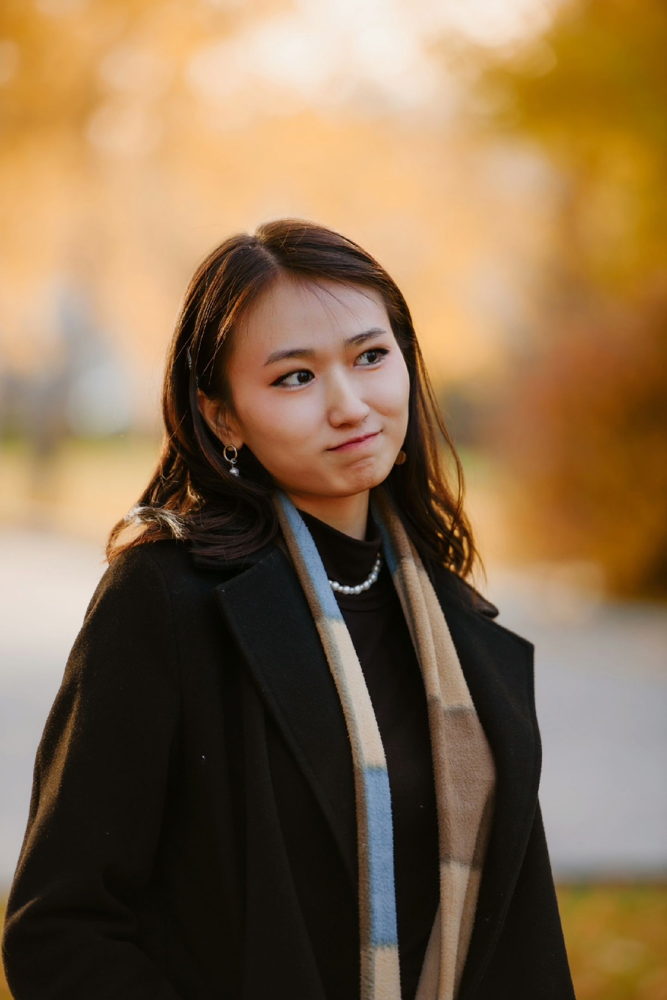
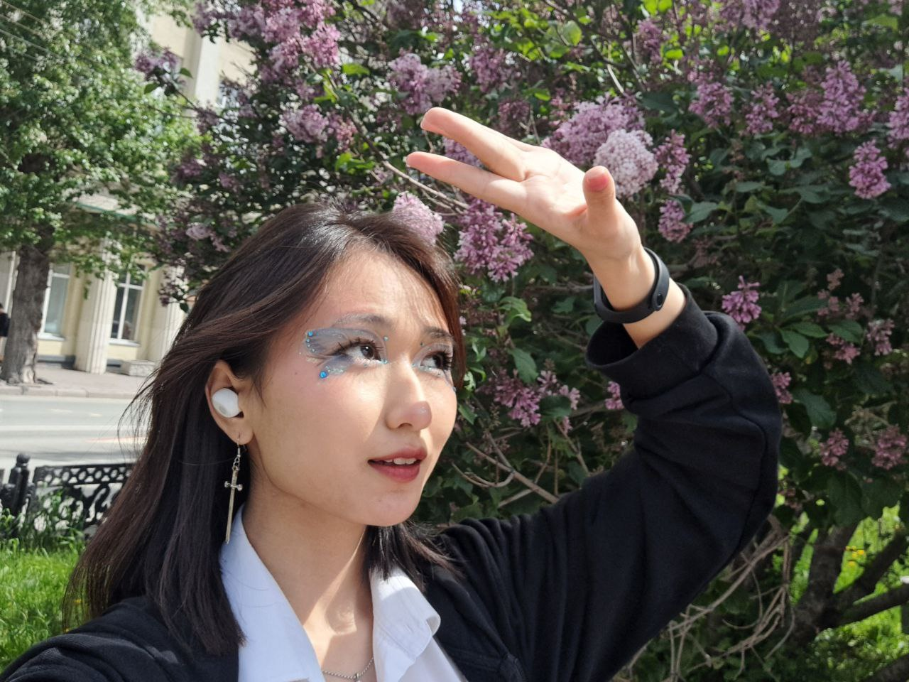
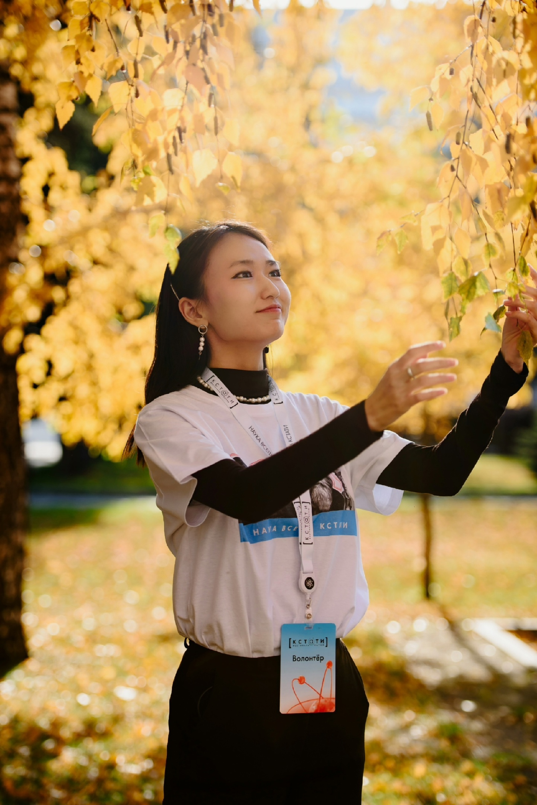

Добро пожаловать на мой личный сайт!
Я рада, что вы заглянули, ведь это место, где я делюсь собой с миром. Здесь вы найдёте информацию обо мне, о том, что меня интересует и некоторых особенностях моей жизни. Возможно, вы ищете вдохновение или просто хотите узнать меня получше. В любом случае, я надеюсь, что этот сайт будет вам интересен и полезен.
Обо Мне
Меня зовут Хан Камилла, и мне 20 лет. Я родилась 3 сентября 2004 года в городе Талдыкорган, Казахстан. Я кореянка по национальности, и у меня большая семья: две сестры, брат, мама и папа. Сейчас я учусь в НГТУ на факультете прикладной математики и информатики. Мне очень нравится учиться, узнавать новое и решать сложные задачи. Я полна энергии и планов на будущее. Я уверена, что мои знания и усилия помогут мне многого добиться в жизни!
Мои Увлечения
Моё увлечение — это визаж. В нём я вижу возможность подчеркнуть красоту, создать образ, выразить настроение и даже рассказать историю. С каждым новым макияжем я открываю для себя что-то новое, экспериментирую с техниками, ищу свои фирменные приёмы. Это увлечение захватило меня с головой! Я с удовольствием крашу себя и других и не могу удержаться от того, чтобы не поделиться своими знаниями и навыками. Например, я участвовала в конкурсе «МИМ», где красила моделей, а также делала макияж для разных фотосессий. Это были невероятно яркие и волнующие впечатления!
Волонтерство
С мая 2024 года я стала заниматься волонтерством. Это не всегда легко, но удовольствие, которое я получаю от того, что могу помочь другим, перевешивает все трудности. Я участвую в благотворительных акциях и поддерживаю организации. Каждый раз, когда я вижу радость в глазах тех, кому я помогаю, я чувствую, что моя жизнь имеет смысл. В волонтёрстве я нашла отдушину. Я хочу делать мир лучше, и я знаю, что каждый может сделать что-то хорошее.

Мои Мысли
Я верю, что каждый из нас прекрасен по-своему. В каждом человеке есть уникальная искра, особый свет, который делает его неповторимым. У каждого своя история, свой путь, свои мечты. Неважно, как трудно, главное — не сдаваться. С каждым шагом, с каждым усилением мы приближаемся к своему предназначению. Я не боюсь падать, ведь в каждом падении есть сила для нового взлёта. Я использую каждый день, каждую возможность, чтобы двигаться вперёд. Стоит попробовать всё, что можешь, экспериментировать, искать свои интересы, не боясь ошибаться. Жизнь — это великое приключение, и мы должны взять от неё всё! Именно так я найду то, что мне действительно нравится, то, что заставляет меня гореть. Я верю в себя и в свои силы. И я хочу озарить мир своей искренней улыбкой и добрыми делами.
